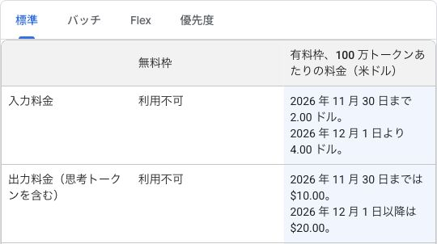
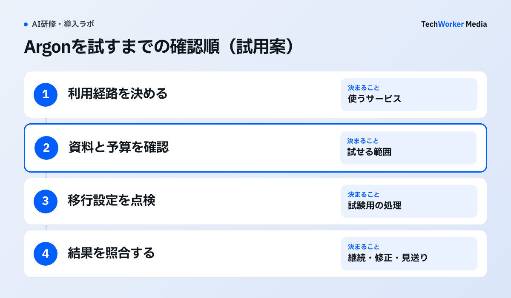

アプリのPro対応と、APIの契約を分けて確認します
Googleは2026年10月13日、Gemini 4 Argonの世界向け提供を発表しました。GeminiアプリではGoogle AI ProとUltraが対象です。プログラムから呼び出すGemini APIは有料枠で提供されます。
社内で「Proなら使える」と聞いたときは、使う画面を確認します。チャット画面で試すことと、社内システムからAPIを呼ぶことでは、契約と予算の確認先が変わります。
原文Google AI Pro and Ultra subscribers can now access Gemini 4 Argon and give Gemini tasks to get more done.
日本語訳Google AI ProとUltraの加入者は、Gemini 4 Argonにアクセスし、Geminiにタスクを任せて、より多くのことを進められます。
これはGeminiアプリの公式発表の記述です。2026年10月13日発表、10月14日確認。引用中のタスクはGoogleの製品機能を指します。自社の業務で効果を確かめた結果ではありません。
一方、Gemini APIの料金表は、Argonを無料枠とGoogle AI Proプランの対象外と記しています。アプリの説明とAPIの説明を、それぞれの利用場所に対応させて読みます。

公式表の「標準」と「無料枠」を見ると、APIの対象と単価を確認できます。入力料金と出力料金には、適用する期間が別々に書かれています。この表だけでは、アプリの月額料金や会社の資料を入力できる条件は分かりません。
Google Antigravityは、AIがコードの作成や修正を進める開発環境です。10月13日のモデル発表では、Argonの対象をGoogle AI Ultra加入者と説明しています。アプリのPro対応を、Antigravityにもそのまま広げて判断しないでください。
APIの予算は、12月1日以降の単価も入れて決めます
Gemini APIのStandard料金には、2026年11月30日までの導入価格があります。12月1日からは入力・出力の単価が変わります。
Standardは100万トークンあたり、入力2米ドル、出力10米ドルです。2026年12月1日からは、入力4米ドル、出力20米ドルになります。出力には思考トークンを含みます。
出典はGoogleのAPI料金表です。2026年10月14日に確認しました。上記はStandardの米ドル建て単価です。Batch・Flex・Priorityの単価は含めていません。検索などの追加機能の料金も別に確認します。
トークンは、AIが文章などを処理するときの量の単位です。出力の料金には、答えを作るために使う思考トークンも含まれます。画面に見えた回答の文字数だけで、利用額を見積もらないでください。
試用の記録には、利用したモデル、入力、出力と思考の量、追加機能、実請求額を残します。11月中に試した結果で継続を判断する場合も、12月以降の単価で予算を確かめます。サブスクリプションの支払額とAPIの従量料金は、別々に記録します。
既存APIの移行は、モデル名以外の設定も点検します
Googleの移行ガイドには、出力上限、キャッシュ、実行時間の確認が並びます。稼働中の処理を変える前に、同じ入力を使った試験用の処理で確かめます。

公式の移行ガイドでは、Argonの入力・思考・出力が一つの上限を共有します。既存の入力を渡したまま、長い回答の余地が十分にあるかを確認します。
また、明示的にキャッシュを作る方式はサポートされていません。既存処理でキャッシュを作成・指定している場合は、その呼び出しを点検します。温度などのサンプリング設定を渡しても無視されるため、従来と同じ指定値だけでは出力条件をそろえられません。
長い処理は数分かかる場合があります。公式ガイドは、バックグラウンド実行か、少なくとも15分のHTTPタイムアウトを案内しています。これは通信の待ち時間の設定です。社内で許容する処理時間や費用の上限は、別に決めます。
図は本記事で提案する試用の順番です。まず利用経路を決め、資料を渡せる条件と予算を確認します。その後、既存処理の設定を点検し、確認済みの入力で試します。契約や資料の条件が不明なら、入力する前に保留します。
結果には、完了したか、途中で止まったか、人が直した箇所を書きます。開始できなかったものは未検証として残します。実行後に品質条件を満たさなかった結果と分けて、継続・修正・見送りを判断します。
日本で試す前に、地域と会社の利用条件を確認します
Google AI StudioとGemini APIの提供地域一覧には、日本が含まれます。同資料は2026年4月28日更新、10月14日確認です。年齢条件は18歳以上とされています。
地域が対象でも、会社の資料を入力してよいかは別の確認です。契約、入力できる情報、保存条件、管理者の設定を、使うサービスごとに確かめます。Google AI Proの案内を、Google Workspaceの全社員への提供や管理機能の保証とは扱いません。
最初に試す範囲は、公開資料や利用許可のある資料を使った一つの作業に絞ります。たとえば、公開済み製品資料から社内説明の下書きを作り、担当者が原文と照合する試用案です。送信、公開、元データの書き換えは試用の対象から外します。
TechWorkerは本記事の制作時点で、Argonの業務試用を行っていません。日本語での精度、所要時間、実請求額、個別アカウントへの提供状態は未検証です。公式の提供開始と、自社で使える条件がそろったことを分けて、試用を始めてください。
出典と確認範囲
Googleのモデル発表とGeminiアプリの発表は、2026年10月13日付です。API料金表と移行ガイドも、10月13日UTC更新と記されています。これらと提供地域一覧を10月14日に確認しました。確認日を発表日には置き換えていません。
公式発表・仕様に基づく説明と、本記事の試用案を分けて掲載しています。性能の優劣、削減率、顧客の成果を示す記事ではありません。会社アカウントでの展開手順は、Geminiの法人導入もご覧ください。